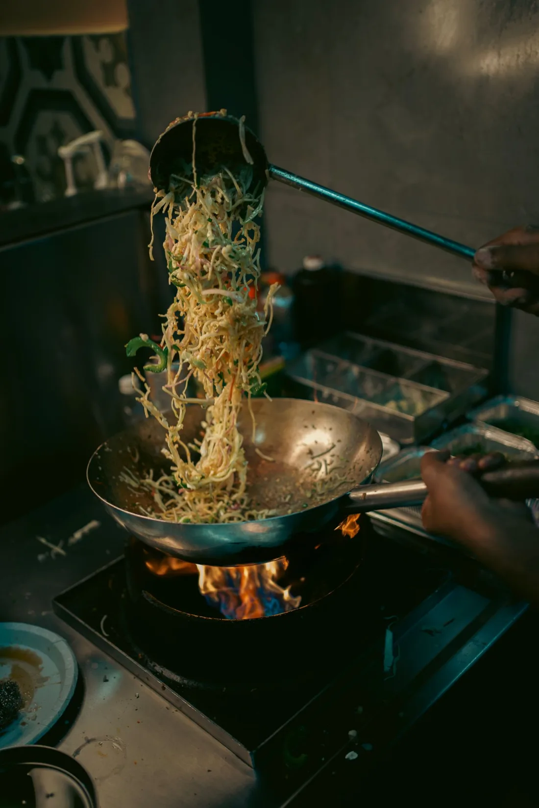
Straight from the wok
The wok only fires up once your order comes in. That is why your usual number still tastes the way it did.
Chinese-Surinamese takeaway · Orthenstraat, Den Bosch

The wok only fires up once your order comes in. That is why your usual number still tastes the way it did.
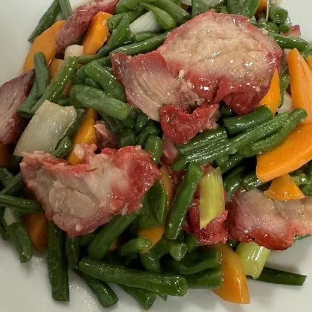
Chinese-Indonesian and Surinamese: moksi meti beside chaw fan, yardlong beans beside tjap tjoy. No need to choose.
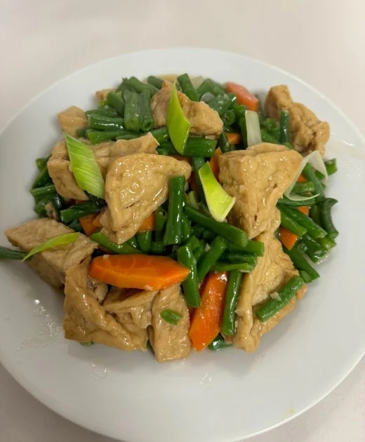
Pak choi, yardlong beans, tjap tjoy and foe yong hai all come vegetarian, with fried tofu for € 1.50 extra.
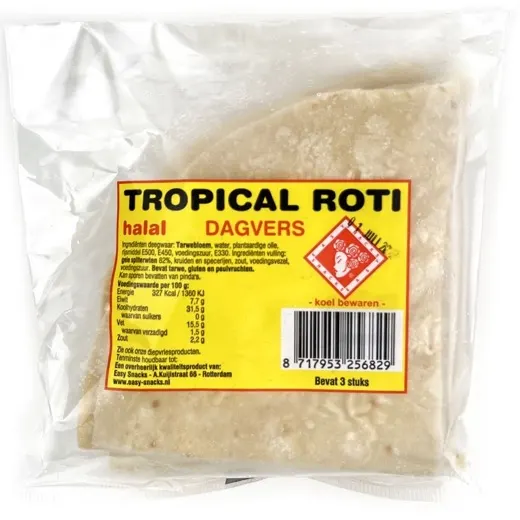
Sambal, roti, noodles and frozen goods: take them home with your order, all in one stop.
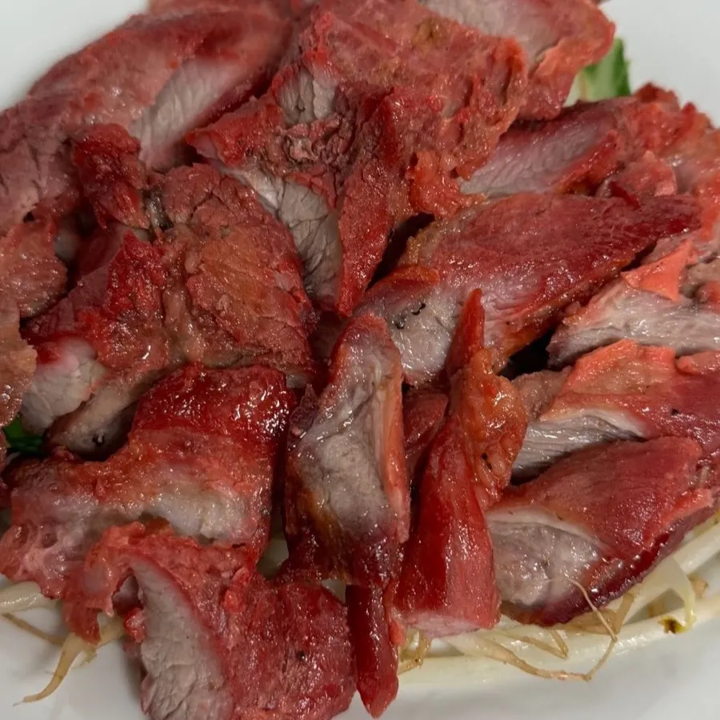
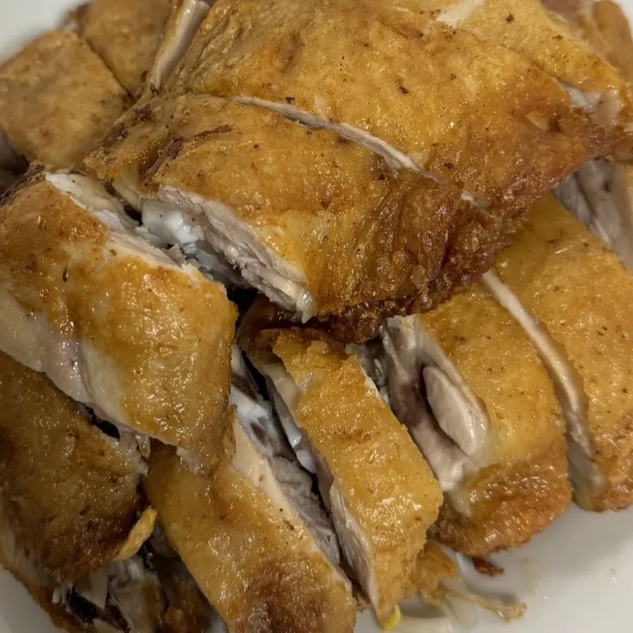
€ 17.80 special € 19.50
Cha sieuw, roasted pork belly and roasted chicken on one plate, with moksi sauce, bean sprouts and white rice.
They are known for their moksi meti, and I fully understand why.Sam HullemanOrder this number
€ 18.80
Crisp roasted pork belly on bean sprouts, with moksi sauce and white rice.
I can warmly recommend the pork belly!Roos KornOrder this number
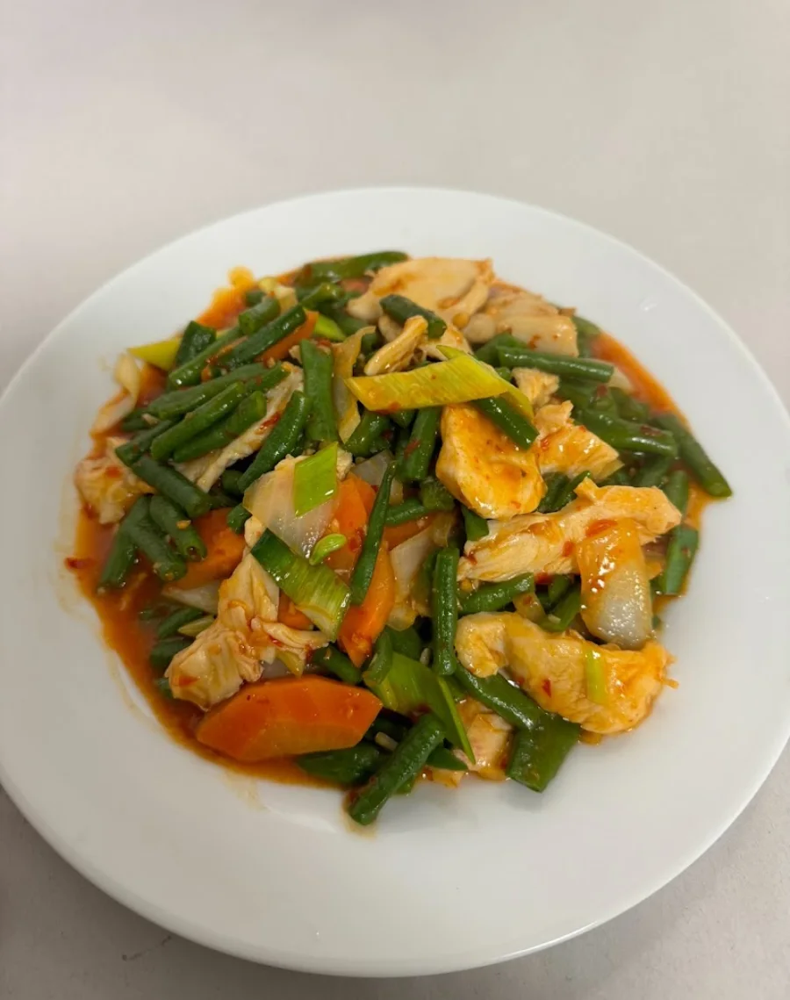
€ 17.95 spicy
Yardlong beans, chicken, leek and carrot in chilli garlic sauce, with white rice.
Order this number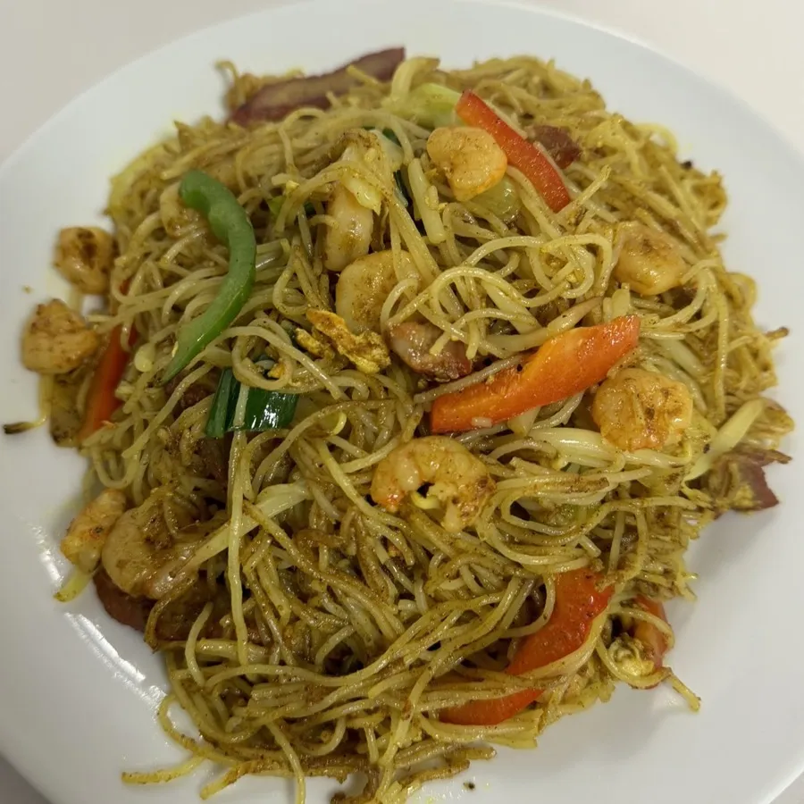
€ 18.80
Thin rice noodles with prawns, curry and fresh vegetables, wokked hot and fast.
Order this number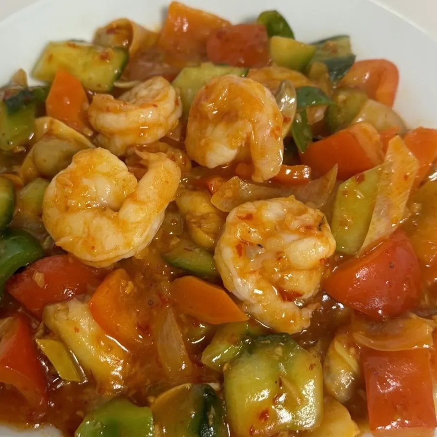
€ 20.95 spicy
Large prawns with chilli, garlic and vegetables in a full sauce, with white rice.
Order this number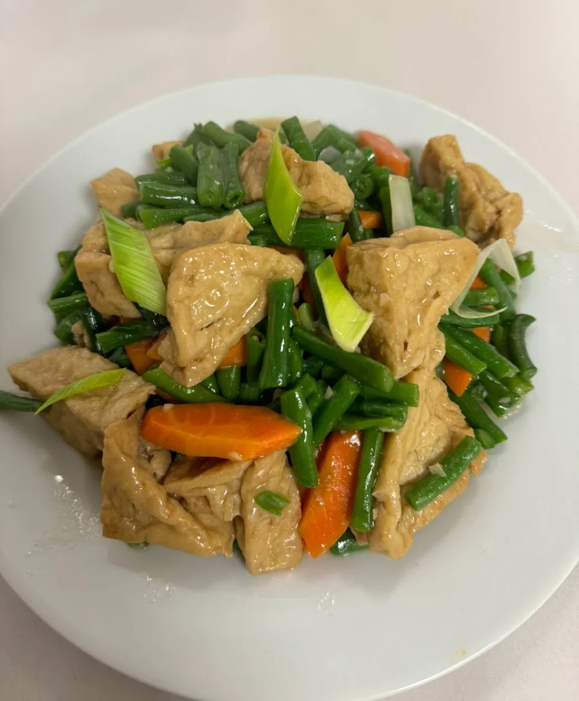
€ 15.50 vegetarian
Yardlong beans and carrot with fried tofu, lightly spiced and with white rice.
Order this numberAt Sang Lee the Chinese-Indonesian and Surinamese kitchens have come together for 45 years. Regulars arrive in generations: for moksi meti with moksi sauce, roasted pork belly from the grill and yardlong beans just like in Paramaribo.
Everything is wokked fresh to order. And here you simply order by number, the way you always did.
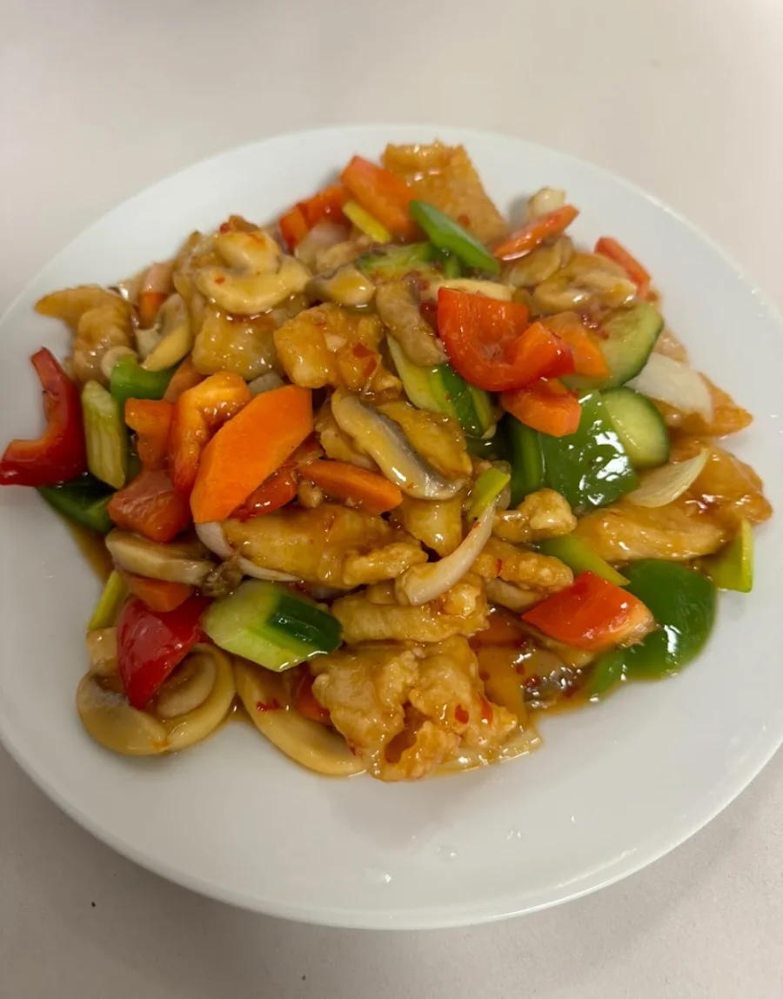
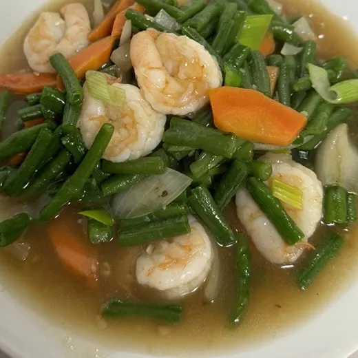
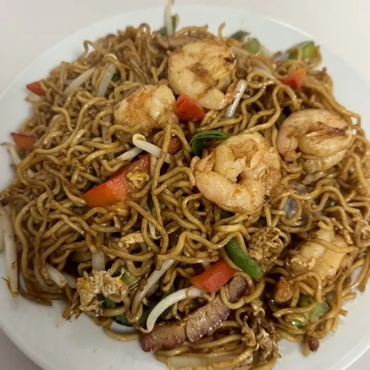
The recipe travelled from Paramaribo to the Orthenstraat, and has not changed since.
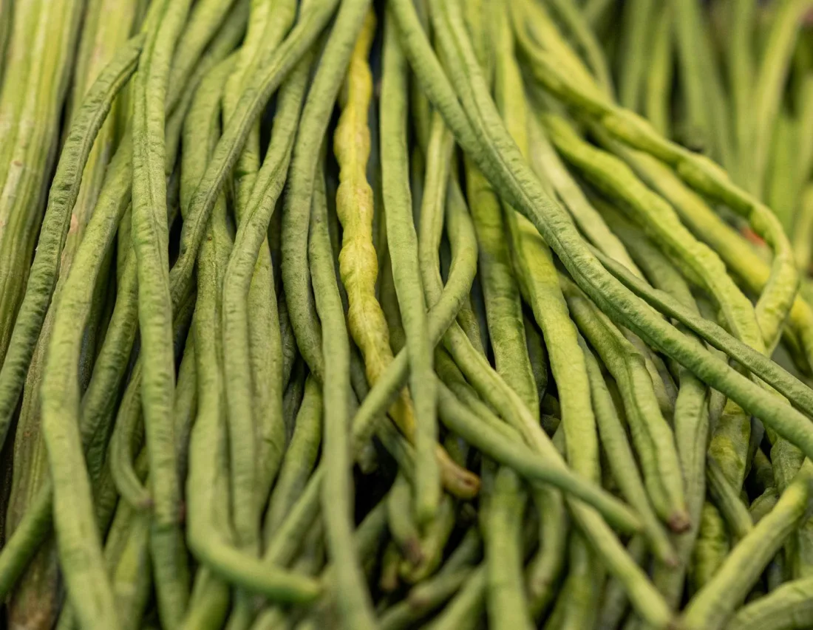
Cut fresh every morning and wokked briefly, so they snap instead of turning soft.
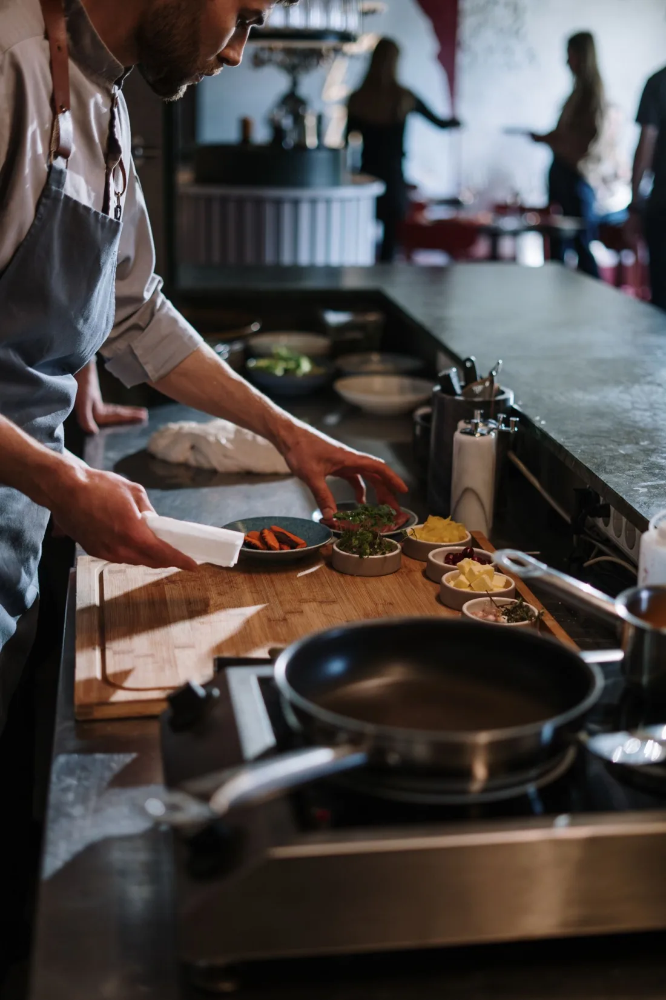
Nothing sits pre-cooked and waiting: your order is what starts the wok.
Great, tasty Asian food with good portions and fast service. One of the very few really good pickup places in the city.
A small takeaway with wonderful food. Not the cheapest, but truly great quality and generous portions. The pork belly and moksi meti are a must!
mentions nr. 3 For Nam Pork Belly
In my view the best Chinese food in Den Bosch and the whole area. You can taste the care that goes into every dish.
Delicious! They are known for their moksi meti, and after one bite I fully understand why.
mentions nr. 1 Moksi Meti
I have been coming here for over forty years. It sounds unbelievable, but it is true: the food is always good, whatever you order.
Search by number or name and add your dishes to the basket. Your familiar numbers still work.
As soon as possible (about 20 minutes) or at the quarter hour that suits you. Delivery is possible too.
Your order is ready at Orthenstraat 57. You pay there, by card or in cash.
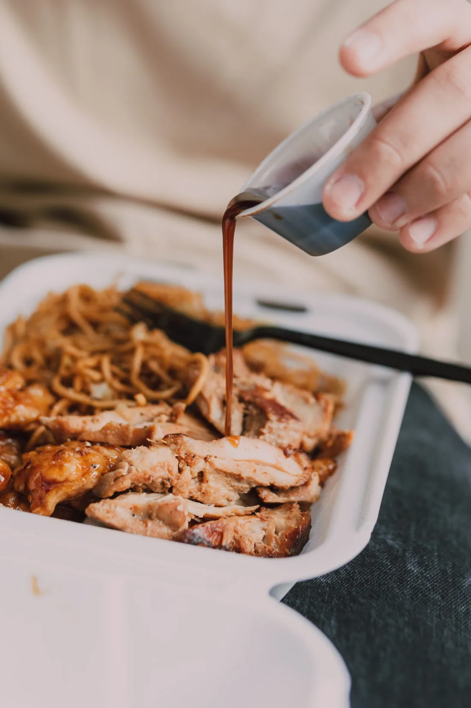
Just walk in at Orthenstraat 57. Ordering online only saves you the wait.
Open Tue to Sun from 12.00 to 20.00
Open Tue to Sun from 12.00 to 20.00, closed on Mondays.